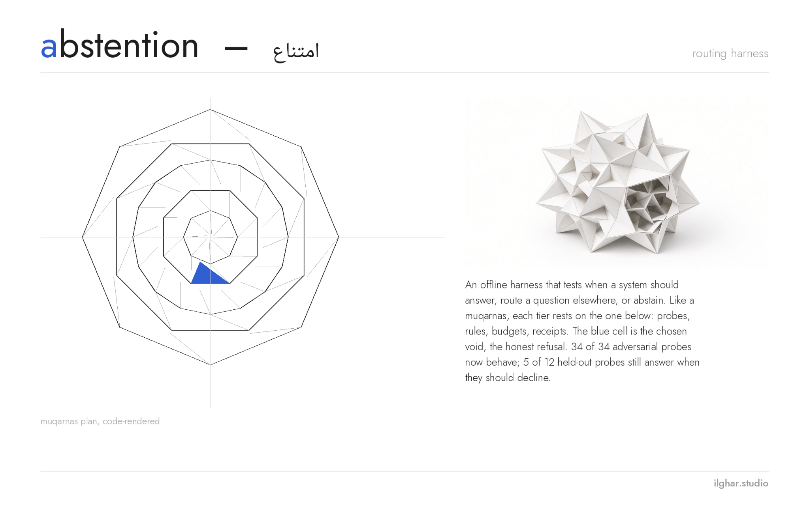
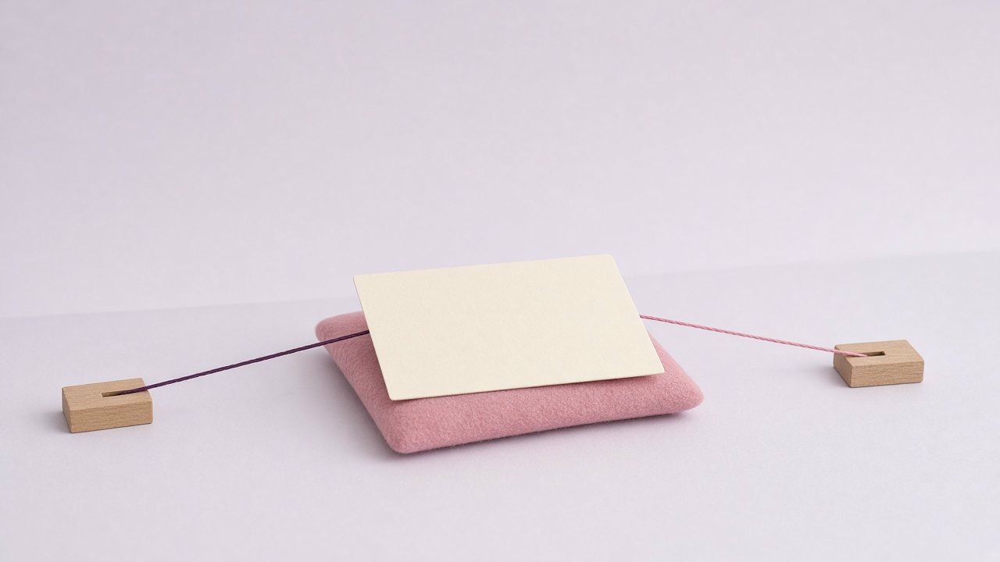

ilghar.studio · case study
Abstention & Routing Harness
A small, strict referee that decides which review desk an incoming item belongs to, and knows when to say “I don’t know, a person should look at this.”
In progress
Measured rule baselines and adversarial robustness on synthetic cases; no model results

Live demo
Answers when a wrong answer costs less than asking. Otherwise, it sends the item to a person.
The question
How can a routing system abstain reliably on mixed, malformed, conflicting or out-of-domain requests without mistaking model confidence for authority?
Picture an archive of mixed material: spreadsheets, chat threads, notes in English and German. Every item has to reach the right review desk. A language model can suggest a desk instantly, and it sounds just as sure when it is wrong.
The original study behind this project made that concrete. A local multilingual reader proposed queues on a twenty-item historical fixture and failed 12 of 20 (by my notes from that study, not re-run here), including one “false winner”: it confidently picked a desk for an item that belonged to neither. Confidence was being mistaken for authority.
This harness turns the lesson into rules you can test. A suggestion is only accepted when the item’s type was confirmed independently, the text is readable and harmless, the budget is valid, and every reader agrees. Everything else goes to a person, with a reason written in plain language. The harness never moves a document; it only advises.
Who it is for
People building triage or routing on top of language models
A ready-made set of gates, reason codes and metrics for measuring how often the system admits work it should have refused.
Evaluators and reviewers
Every decision carries a reason code and a stable identity hash, so runs can be compared and audited line by line.
Archivists and operations teams
A prioritised human review queue that explains why each item was held back, instead of a silent “unknown”.
How it works
Record + independent scope label
Each case carries its text and a scope label confirmed by someone other than the model (for example, “this really is a spreadsheet”). Without it, nothing is admitted.
Validation gates
Invisible or empty text, requests to change permissions or take actions, and invalid or exhausted budgets are stopped before any proposal is read.
Recorded proposals
Proposals from one or more readers arrive as JSON (recorded, mocked or from the local keyword rule). No network call and no model loading happen inside the harness.
Abstain or advise
Malformed, missing, self-abstaining or conflicting proposals are held back. Only clean agreement becomes an advisory route; documents are never moved.
Metrics with denominators
Coverage, selective accuracy, false acceptance and per-class confusion, always as counts over a stated n with Wilson intervals, never a bare percentage.
Human review queue
Every held-back item becomes a row in a prioritised worklist with the reason in plain words.
- Input record + independent scope label
- Pure validation and advisory policy
- Recorded or mocked model proposal adapter
- Abstention + disagreement decision
- Per-class confusion/coverage/error report
- Human review queue

Commands, with real output
abstention-routing-harness run fixtures/synthetic_cases_m03.json --out out/
Apply the policy to 16 hand-written cases with mock proposals. Writes decisions.json and report.json. Mock data, not a model result.
{"coverage": {"admitted": 6, "denominator": 16, "value": 0.375}, "false_acceptance": {"count": 1, "denominator": 4, "value": 0.25}, "selective_accuracy": {"correct": 4, "denominator": 6, "value": 0.666667}}abstention-routing-harness slice inputs/synthetic_queue_fixture.json --probes fixtures/ood_probes_m04.json --out out/m04
End-to-end slice: 20 cleared EN/DE queue items plus 7 out-of-domain and mixed probes, through the local keyword proposer and the policy. The rule was tuned on this same fixture, so this is not held-out.
{"coverage": {"admitted": 21, "denominator": 27, "value": 0.777778}, "false_acceptance": {"count": 1, "denominator": 7, "value": 0.142857}, "selective_accuracy": {"correct": 20, "denominator": 21, "value": 0.952381}}abstention-routing-harness collection . --out out/c
Validate the versioned case collection against schemas/case.schema.json and write a hashed manifest.
{"errors": 0, "files": {"dev_queue.json": 20, "dev_probes.json": 7, "heldout_probes.json": 24}}abstention-routing-harness baselines . --out out/b
Compare three baselines on dev and test: always abstain, always pick the majority desk, and the keyword rule. Values are [coverage, selective accuracy, false acceptance].
{"dev": {"always_abstain": [0.0, null, 0.0], "majority_spreadsheet": [1.0, 0.37037, 1.0], "keyword_rule": [0.777778, 0.952381, 0.142857]}, "test": {"always_abstain": [0.0, null, 0.0], "majority_spreadsheet": [1.0, 0.25, 1.0], "keyword_rule": [0.458333, 0.545455, 0.416667]}}abstention-routing-harness failure . --out out/f
Run the 34-case adversarial suite (invisible text, surrogates, NaN budgets, oversized proposals) and classify held-out errors.
{"adversarial_passed": "34/34", "test_errors": {"over_abstention": 6, "false_acceptance": 5}}python -m abstention_routing_harness.review_queue out/decisions.json --cases fixtures/synthetic_cases_m03.json --out out/queue.md
Turn decisions into a prioritised human worklist (Markdown + JSON) with a plain-language reason for every held-back item.
{"queued": 10, "of": 16, "by_reason": {"BUDGET_EXCEEDED": 1, "BUDGET_INVALID": 2, "INPUT_NOT_PERMITTED": 1, "NO_PROPOSAL": 1, "PROPOSALS_CONFLICT": 1, "PROPOSAL_ABSTAINED": 1, "PROPOSAL_MALFORMED": 1, "SCOPE_UNVERIFIED": 1, "TEXT_INVALID": 1}}
| Priority | Case | Reason | Why it was held back | Excerpt |
|---|---|---|---|---|
| 1 | B08 | `SCOPE_UNVERIFIED` | Nobody independently confirmed what kind of item this is, so no proposal may be trusted. | Format the header row |
| 1 | B09 | `INPUT_NOT_PERMITTED` | The text asks to change permissions, authority or actions; that is never routed automatically. | Archive this conversation |python -m abstention_routing_harness.report --out reports/mock fixtures/mock_confidence_proposals_m08.json
Score cases with the cost/risk policy (expected cost of each route vs the cost of handing to a person), sweep the support threshold, and write a confusion report (expected vs decided: spreadsheet / conversation / person) as JSON and reports/…/index.html. MOCK: the confidences in this fixture are hand-written to demonstrate the mechanism; the numbers are not a result, and the calibration is in-sample.
{"base_accuracy": 0.5833, "cost_accuracy": 0.3333, "best_min_support": 1.0, "n": 12}Measured results
| Metric | Value | n | Kind | Caveat |
|---|---|---|---|---|
| keyword rule false acceptance (test) | 5/12 = 0.417 (Wilson 95% 0.193–0.681) | 12 | measured, synthetic | test probes written by rule author; not blind |
| keyword rule selective accuracy (test) | 6/11 = 0.545 | 11 | measured, synthetic | small n |
| keyword rule coverage (test) | 11/24 = 0.458 | 24 | measured, synthetic | |
| keyword rule false acceptance (dev) | 1/7 = 0.143 | 7 | measured, synthetic | rule developed on dev |
| majority-class false acceptance (test) | 12/12 = 1.0 | 12 | measured baseline | |
| adversarial policy suite | 34/34 (24/34 before the hardening pass) | 34 | measured robustness | suite written by policy author |
Schemas
schemas/case.schema.json | One case: id, text, scope_verified, case_class, expected_route, requests_used (budget), proposals, fixture_kind, known_limitation. |
schemas/decision.schema.json | One decision: route, abstained, reason_code, identity hash, advisory_only, can_move_documents=false. |
schemas/report.schema.json | Run report: fixture hash, rubric, run kind (mock, rule, recorded) and metrics with denominators. |
Limitations
- All items are synthetic; no model was run. Mock results are labelled as mocks.
- Test probes were written by the same author after the rule existed, so they are not blind.
- Historical multilingual-reader fixtures are summaries, not re-runs, and measure a different task.
- Reviews so far are self-reviews; no independent reviewer yet.
- Illustrations are editorial images only; the native diagram is authoritative.
Roadmap: the original ambition
| Next | Status | Where it comes from |
|---|---|---|
| Two-reader reconciliation with a real local reader plus a second, independent reader | planned; the policy already abstains on any conflict | original design paired a local multilingual reader with a second reader and only accepted agreement |
| Re-run the historical 20-item fixture with the local multilingual reader, offline | planned | the 12/20 failure (by my notes from that study, not re-run here) and the false winner that motivated the project |
| Blind held-out probes written by someone other than the rule author | open | current test probes are not blind |
| Calibration study before any confidence threshold is used | mechanism implemented, in-sample, mock data only; validated study still open | original metric list: calibration only after a separate validated study |
| Prioritised human review queue | implemented (review_queue) | original architecture ended in a human review queue |